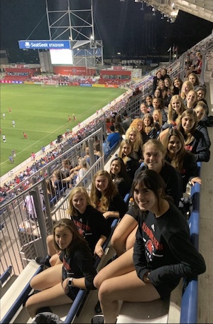
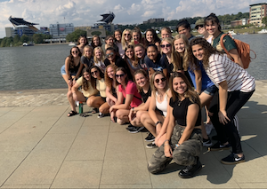
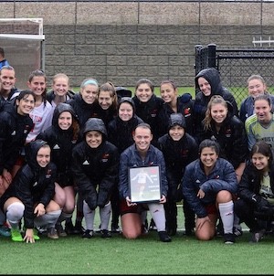

Bold Name indicates that the player is a team captain
Our Soccer Family
#00 Emily Garza-Goalkeeper
#0 Catherine Klemp-Goalkeeper
#1 Caitlin Kenoian-Goalkeeper
#2 Kenna Flores-Defender
#3 Samantha Harkness-Defender
#4 Julia Honda-Defender
#5 Julia Taliana-Forward
#6 Nicole Fajardo-Midfielder/Forward
#7 Brianne Dane-Forward
#8 Erin James-Midfielder
#9 Anna Delseith-Forward
#10 Madison Harris-Defender
#11 Jacklyn Mcaninch-Defender
#12 Andrijana Sajic-Midfielder
#13 Emily Dashiell-Forward
#14 Savanna Gonzalez-Defender/Midfielder
#15 Jamie Griggs-Midfielder
#16 Elena Esparcia Canada-Midfielder
#17 Katelyn Holcomb-Defender
#19 Caeli Kennedy-Midfielder
#20 Alexis Williamson-Defender
#21 Christina Majercak-Defender/Midfielder
#22 Kimi Casupang-Defender
#23 Sydney Silver-Midfielder
#24 Cosette Thompson-Midfielder/Forward
#25 Olivia Hansen-Midfielder
#40 Cheryl Gardner-Goalkeeper
Pictures from Throughout the Season

Our family observing a Chicago Fire professional match during our preseason

Picture across the water from Heinz Field on our team trip to Pittsburgh in the fall

Picture at halftime of senior night to celebrate our lone senior Maddy Harris